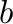
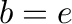
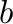
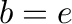

Next: pow
Up: Binary Operations
Previous: or
Contents

Take the logarithm of the  input port,
to base . The base needs to be specified -- if the natural
logarithm is desired (), use the natural log instead.
input port,
to base . The base needs to be specified -- if the natural
logarithm is desired (), use the natural log instead.
The operator can be placed on the canvas in two ways:
- From the Binary Operations (``binop'') toolbar; or
- By typing the word ``log'' anywhere on the wiring canvas, and then
pressing the Enter key.
When you use the direct typing method to enter the Log operator, the
text entry window pops up. This allows you to type a variable/parameter
name starting with Log (like, for example, ``Logical''. If you press
Enter (or click on OK) with only the word Log in the window, the Log
operator will be placed on the canvas.